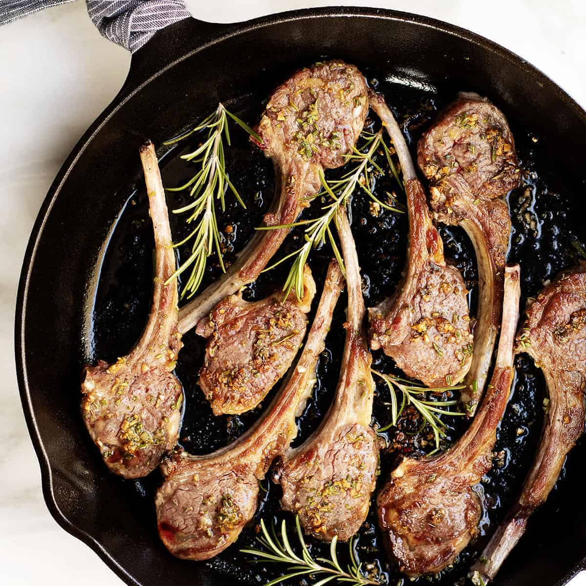

Lamb Chops

Description
Indulge in the rich and savory flavors of our simple lamb chops recipe. Each succulent lamb chop is seasoned
to perfection with a delicate balance of salt and pepper, then seared to tender perfection in a hot skillet.
Enhanced with aromatic garlic and fragrant rosemary, these juicy lamb chops are a delightful symphony of flavors
that will tantalize your taste buds. Whether you're hosting a special gathering or craving a gourmet meal, our lamb
chops recipe is sure to impress with its simplicity and exquisite taste. Treat yourself to a culinary adventure and
savor the unforgettable experience of our classic favorite!
Ingredients
- 4 lamb chops
- Salt and pepper to taste
- 2 tablespoons olive oil
- 2 cloves garlic, minced
- 2 tablespoons fresh rosemary, chopped
Cooking Instructions
- Preparation: Remove the lamb chops from the refrigerator and let them sit at room temperature for about 30 minutes.
Season both sides of each lamb chop generously with salt and pepper.
- Cooking: Heat a skillet over medium-high heat until it's hot.
Add olive oil to the skillet and swirl to coat the bottom.
Carefully place the seasoned lamb chops in the hot skillet, ensuring they are not overcrowded.Cook the lamb chops
for 3-4 minutes on each side for medium-rare doneness, or adjust the cooking time according to your preferred level of doneness.
- Finishing: During the last minute of cooking, add minced garlic and chopped rosemary to the skillet, and toss them with the lamb
chops to infuse them with flavor.
- Resting and Serving: Once cooked to your desired doneness, transfer the lamb chops to a plate or cutting board and let them rest for a few minutes.
Serve the lamb chops hot, garnished with additional fresh rosemary if desired.